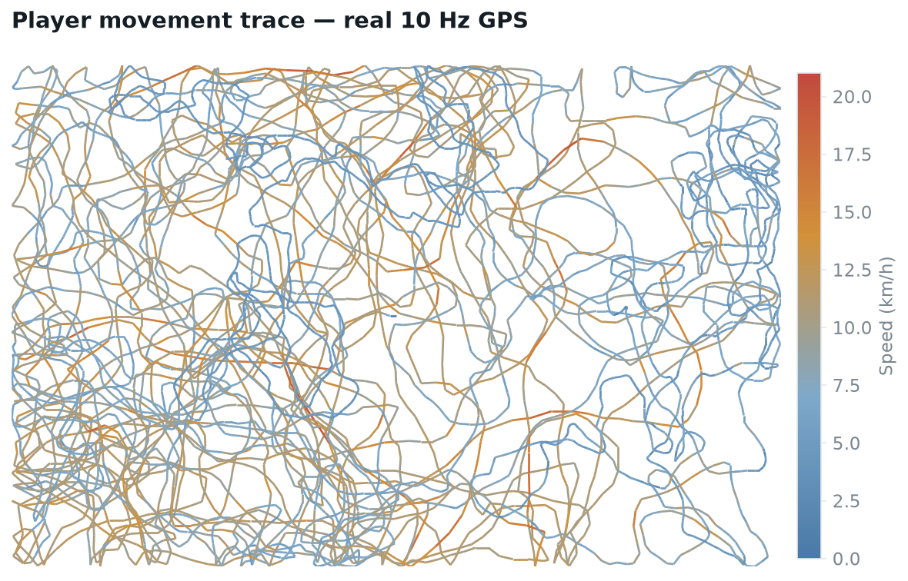
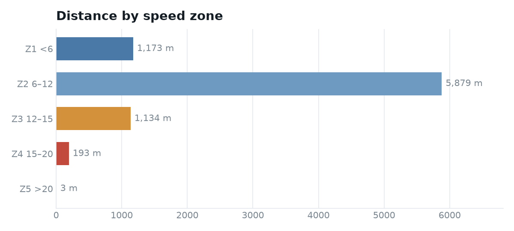
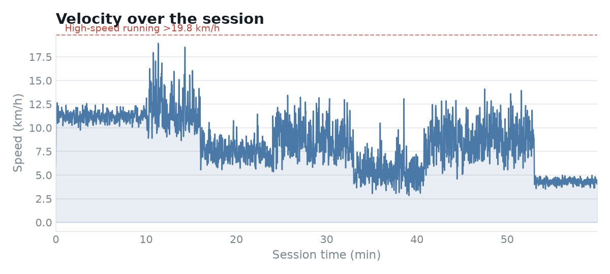
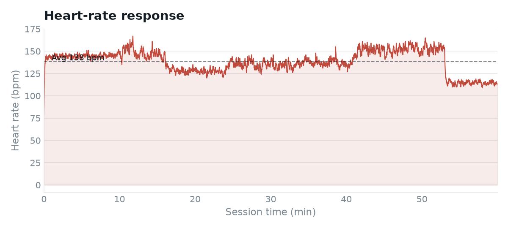

GPS Session Physical Report
A raw 36,000-row Catapult GPS export, turned into the one-page physical summary a sports scientist hands to coaches after every session — reproducible from a single command.
The brief
GPS units capture an athlete’s every step at 10 samples a second — but a coach can’t read 36,000 rows of latitude and velocity. They need four or five numbers that say how hard the session was and where the load sat.
This project takes a single training session’s raw export and produces that summary automatically: total distance, work rate, speed-zone distribution, Player Load and heart-rate response — the standard physical KPIs used across professional team sport.
The raw signal
The starting point is the athlete’s movement itself. Plotting the raw latitude/longitude and colouring each step by speed shows the full session at a glance — the cool blue of recovery jogging, the warm and red bursts of high-speed efforts.

What I did
- Parsed & cleaned the Catapult export (a title line sits above the header; column names vary between exports, so matching is lenient).
- Integrated velocity to distance and classified every 0.1 s sample into five speed zones — computing zone distance as
Σ v·Δt, not by naive sample-counting. - Accumulated Player Load and heart-rate response across the session.
- Wrote the whole thing as a reproducible script — one command regenerates the summary, the charts and machine-readable CSVs.
8,382 m covered at a 140 m/min work rate, peaking at 21.0 km/h, for a Player Load of 796 au and an average heart rate of 138 bpm.
Speed-zone distribution
Breaking distance into speed bands is how staff judge what kind of running an athlete did, not just how much. This session was aerobic in character — the vast majority of distance sits in the jogging band, with a small but real high-speed component.



Why it matters
A report like this is the daily unit of a performance department. Delivered consistently, it lets staff compare today against an athlete’s norm, spot who is over- or under-running, and feed accurate load into the weekly plan. Because it’s scripted rather than hand-built in a spreadsheet, it takes seconds to run on the next session and never drifts.
Skills demonstrated: time-series parsing, signal-to-metric feature engineering, sports-science domain modelling (speed zones, Player Load), and reproducible reporting with clean, readable Python.